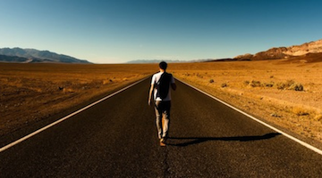

- Home
- Contact Us
Life On The Road 
Travel is one of the most exciting, interesting, and learning experiences a person can do in their lifetime. It makes you a far more well adjusted person. But spending extended time on the road has its ups and downs. It’s not all rainbows and unicorns (but it mostly is!). Below you will find all my advice on how to be prepared for life on the road and all the emotions that go into planning a trip.
10 WAYS TO BE PREPARED FOR ANYTHING 9 THINGS I’D TELL A NEW TRAVELER HOW NOT TO OVERCOME FEELING OVERWHELMED
Here are 14 ways to be prepared for any You learn a lot of lessons the hard way. It’s easy to feel overwhelmed when planning mishaps, disasters, or accidents that These are twelve pieces of advice I’d a trip around the world. There’s so much may happen when you go traveling around tell any new traveler before they set information to digest. But there are easy the world. By following a few simple tips, out on the open road to avoid my mistakes, ways to overcome that feeling and feel like you’ll be prepared for anything and save money,and have an awesome time. only excitement about your trip. Here’s how. never let misfortune ruin your trip. This post will give you timeless tips to ease your mind.
HOW TO OVERCOME BEING ALONE HOW TO DEAL WITH UNSUPPORTIVE PEOPLE WHY THERE IS NO RIGHT ANSWERA lot of people fear traveling alone Not everyone is going to support you and Getting travel “right” is something a lot of because they think solo travel means their naysaying can make you second guess beginner travelers worry about. I say there alone travel. That’s simply untrue. your decision to travel. Here is advice on is no right answer to traveling and letting You’ll meet a lot of people. Here is how to deal with those friends and family go, let’s you enjoy the moment a lot more. my advice on meeting people if you who get you down and get them on board with are an introvert like me. your plans.THE CHALLENGES OF BEING A GAY SOLO BACKPACKER WHY GOING HOME DOES NOT MEAN FAILURE
Backpacking is a great way to explore the Coming back home does not mean you failed world. However, gay travelers have to deal in your attempt to travel the world. It’s with a new set of challenges on the road. better go and try than never go at all since Learn here how to face obstacles and no matter how long you travel, you’ll overcome them when you travel so you can come back knowing a bit more about yourself. enjoy your backpacking experience to the fullest!